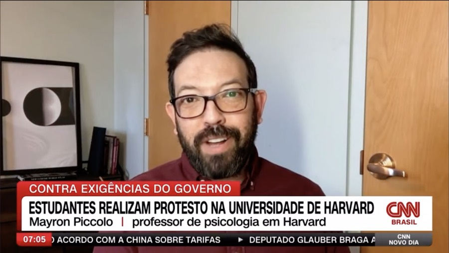

In the Press
From CNN Brasil to HuffPost — psychology, translated for the public, in two languages.

Medium · April 2026
Springing Forward: How the “April Theory” Is Transforming Goal-Setting and Mental Health on Social Media
Cited among psychologists linking spring's rise in serotonin and sense of renewal to improved mood and motivation.
Podcast · November 2025
Harmony and Healing: Exploring Music, Mind, and Community
Harvard Extension School Psychology Student Club Podcast — on communal music, reward, and belonging.
Video · November 2025
The Psychology of Rewards & Mechanisms and Markers of Psychopathology
Harvard Extension Student Psychological Club — a talk on how reward shapes behavior and on the markers and mechanisms of mental illness.
Video · August 2025
Guess the Majors Concentrations of Harvard College Students
Harvard College Admissions & Financial Aid — put to the test as a Harvard advisor: guessing what six students concentrate in from just a few quick questions.
The Epoch Times · July 2025
10 Research-Backed, Natural Ways to Counter Depression
On behavioral loops in depression and the everyday effectiveness of CBT: “moving in the right direction matters more than moving quickly.”
HuffPost · May 2025
Inflation Is Hurting Everyone — But for Parents, It's Taking a Deeper Toll
Quoted on protecting parents' mental health under financial strain: “caring for your own nervous system is essential to caring for your kids.”
Medium · April 2025
Why April Is the New January: Embracing the “April Theory” for Personal Growth
Quoted on how spring's longer days and increased sunlight can boost serotonin, enhancing mood and motivation.
Verywell Health · April 2025
April Is the New January
By Kathleen Ferraro. Quoted on the seasonal lift in mood and motivation and how it shapes goal-setting and mental health.
Podcast · May 2024
QuantComigo, Episode 2
Portuguese-language conversation on his path from Brazil to Harvard, reward science, and mental health.
Revista Candil · UFMS, No. 17 · April 2024
Primeiros Tons: estudo inédito analisa impacto das práticas comunais artísticas na saúde mental de crianças em idade pré-escolar
Portuguese-language feature on the First Tones (Primeiros Tons) communal music-making study and its pilot with preschool children in Brazil.
Swissnex Brazil · 2021
Swiss Government Excellence Scholarships as a Springboard
On the path from a small town in southern Brazil to doctoral research in Switzerland.
Horizons — The Swiss Research Magazine (SNSF) · March 2020
Anorexics Might Lack the Appetite Trigger
Coverage of his European Eating Disorders Review study on altered circulating endocannabinoids in anorexia nervosa, with a quote on cannabinoid-based directions for treatment.
Founder · Online Project · 2020–Present
Psicologia no Sofá
“Couch-talk psychology” — free, high-quality psychology talks and lectures that have reached more than 4,000 Portuguese- and English-speaking listeners since 2020.